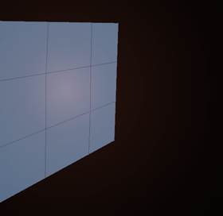
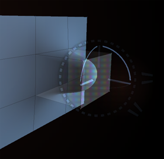

|
E X T R U D E S
You can extrude selected polygons by middle clicking while you are transforming
a part of the geometry. (Selected polygons are polygons where all vertexes are selected.)
You can also press the middle mouse button multiple times to create multiple
extrudes. Extrude works with all forms of transform (transform, rotate, scale, normal
and tangent).
|

|

|